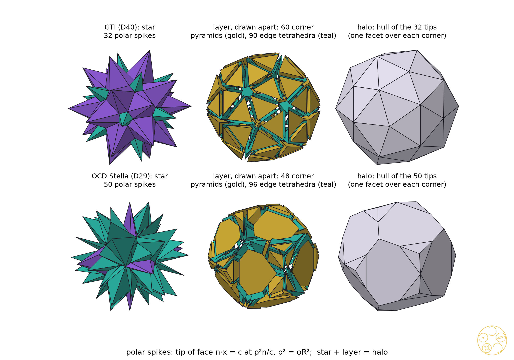
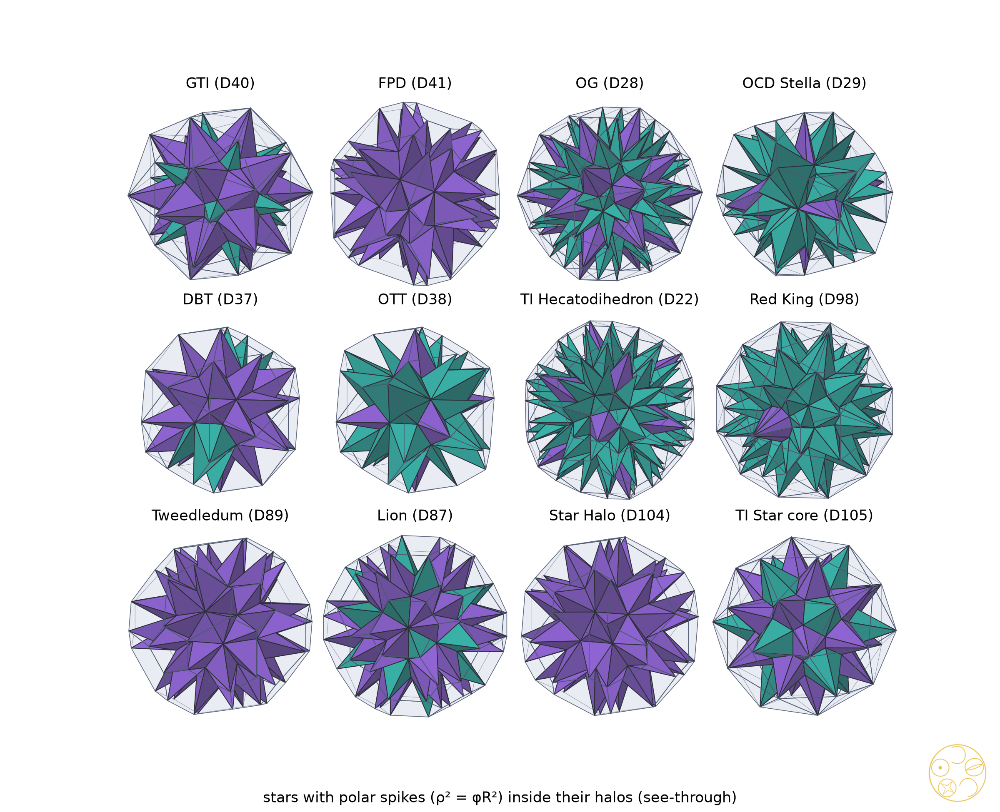
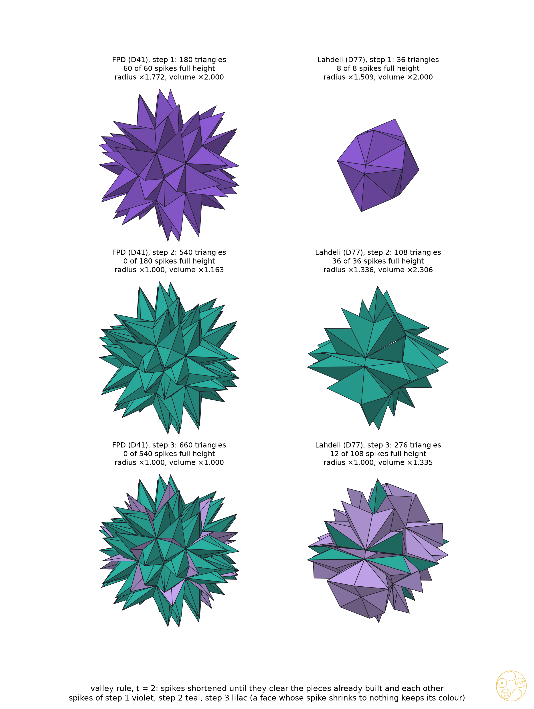

Polar spikes always fill: the star core treatment of every new convex shape
Cut a solid from its centre into pyramids, one on every face, and turn them outwards. The solid becomes a star. Wrap the star in the tightest skin and a new, larger solid appears: the star's halo.
The truncated icosahedron (TI) was the first solid to get this treatment in full (#78): its 32 face pyramids turned outwards make the TI Star, the hull of their tips is the Star Halo, and the space between them fills with tetrahedra of three kinds. DICTO's Cleo star (#35), the icosahedron with its twenty Cleo-Icos turned out, came before it. Taking the hull of the tips undoes DICTO's growth rule T of Universal PiTet (#38), T(S) = {x : v·x ≤ v·v for every corner v of S}, so every star step is a step of T read backwards (#78, Section 6).
DICTO proposed the same treatment for all his new shapes: "all new shapes given the star core treatment". This paper reports it for the 54 shapes of the data set DICTO Solids: Exact Geometry (v6) that can be cut from their centre into face pyramids. It gives one card per shape (Section 8), and one theorem that explains which rule for the spikes always works (Section 3). Paper B of this series follows the cores of the turns, and paper C the exact growth of the chains.
Let S be a solid with its centre O inside every face's pyramid, so that S is the union of the pyramids from O over its faces. The treatment has six steps:
Every shape falls into one of four groups under the centre rule: A, the star fills its halo and the core comes back to the shape; B, the star fills its halo, the core does not come back to the shape itself; C, the star lies inside its halo but the corner and edge pieces do not fill the layer; D, the star sticks out of its halo.
Put every spike's tip not at a multiple of the face centre but at the face's partner point on the far side of a large sphere. Then the gaps between the spikes always fill, for every convex solid, with only two kinds of piece.
For a face plane n·x = c (c > 0) and a radius ρ, the pole of the plane in the sphere of radius ρ about O is p = ρ²n/c (for a unit normal n, the point on the face's axis at distance ρ²/c from O). Taking poles of all face planes is polar reciprocation, and the hull of the poles is the polar solid S* = {x : v·x ≤ ρ² for every corner v}.
Theorem (polar-spike fill). Let S be a convex solid with O in its interior, R its circumradius and ρ > R. Give every face f the spike with tip pf, the pole of its plane. Then:
(a) the halo, the hull of the tips, is the polar solid S*; its facet over each corner v lies in the plane v·x = ρ² and has as corners the tips of the faces round v;
(b) the layer between the star and the halo is tiled exactly, with no gaps and no overlaps, by one corner pyramid over each corner v (apex v, base the facet of S* over v) and one edge tetrahedron over each edge ab (corners a, b and the tips of the two faces at ab).
So the pieces number V + E (corners plus edges), and the halo is the star plus V + E pieces.
Proof. (a) is the classical description of the polar: S* is bounded by the planes v·x = ρ², one per corner v of S, and its corners are the poles of the face planes of S; the corners on the facet of v are the poles of the faces through v. (b) Every piece has positive volume. A spike's tip lies beyond its face because its distance ρ²/c from O exceeds c (c ≤ R < ρ). A corner pyramid's apex v lies on the inner side of its base plane because v·v ≤ R² < ρ². For an edge tetrahedron, project along the edge ab: the line of ab becomes a point at distance d from O, the two face planes become lines through it, and the two tips the poles of those lines; a two-line calculation shows the tetrahedron's orientation is the sign of ρ² − d², and d ≤ R < ρ because the edge's nearest point to O is no farther than its ends. The pieces fit face to face. Each spike side (a, b, pf) is shared with the edge tetrahedron of ab; each triangle (v, pf, pg), for faces f and g meeting at the edge from v, is shared by the corner pyramid of v and the edge tetrahedron of that edge; the faces left over are the spike sides' partners and the facets of S*. So the pieces, all of positive orientation, form a complex whose boundary is the boundary of S* together with the star's surface, and a complex of positively oriented pieces with that boundary covers each point between star and halo exactly once. ∎
The join as the thin limit. If S has a midsphere (every edge touching one sphere of radius ρm), then at ρ = ρm each edge has d = ρ, so every edge tetrahedron is flat: the edge of S and its dual edge cross, and the halo's faces become the rhombi of the join, the hull of S and its polar (Conway's jS). The theorem is the thick version of the join, valid for every convex solid and every ρ > R. For ρ between the midsphere and R some pieces would turn inside out, which is why the bound ρ > R is needed.
Checks. The fill was computed for all 48 convex shapes at ρ² = φR² and 2R² (float64, overlaps by the separating-axis test): every layer adds up to the halo minus the star to within 3 × 10−15 of its volume and no two pieces overlap; the layer pieces number from 10 (the Dodeca-13 Needle: 4 corners, 6 edges) to 690 (DPHP: 270 corners, 420 edges). For the ten solids of paper C (GTI, FPD, Palintriacontahedron, Icosaxes, Unborn Axes, Metaxyhexecontahedron, Tweedledum, Samson, David, Delilah) every piece was also checked exactly, in each solid's own number field: nonzero volume, one orientation per kind, and the exact sum equal to the halo's volume.


With the tips at a fixed multiple of the face centres, the trick of the TI Star works for fewer than half of the shapes. The polar rule mends all the rest.
Table 1 sorts the 54 shapes by what the centre rule gives at t = φ (t = 2 gives the same groups). Only 22 of the 48 convex shapes behave like TI. For the 26 others the tips at a fixed multiple of the face centres are wrong for the shape: where a solid's faces lie at very different distances from the centre, the near faces' tips fall short and the far faces' tips overshoot, so the star either sticks out of the hull of its own tips (group D) or leaves gaps round its high corners that the corner and edge pieces cannot reach (group C). The polar rule of the theorem has no such failure: with it every one of the 48 convex shapes fills, at both ρ² = φR² and ρ² = 2R², whichever group the centre rule put it in. For the faces that all lie at one distance from the centre (TI and the face-transitive shapes) the two rules give the same tips, up to scale.
| Group | Centre rule (t = φ) | Convex | Non-convex | Convex shapes |
|---|---|---|---|---|
| A | star fills, core comes back to the shape | 2 | 0 | GTI (golden truncated icosahedron), TI Star core |
| B | star fills, core does not come back to the shape | 20 | 0 | Truncated-Icosahedral Hecatodihedron, Ogdoecontahedron (OG), Metaxyhexecontahedron, Palintriacontahedron, FPD (flat pentakis dodecahedron), KRE, PHE, TPP, DPHP, TPH, TQH, TQP, TQHD, Lion, Jabberwock, Tweedledum, Tweedledee, Jubjub, Red King, Star Halo |
| C | star inside halo, layer not filled by corner and edge pieces | 12 | 5 | OCD Stella, Belted Triacontahedron (DBT), OTT (Octahedrally Truncated Triacontahedron), Mad Hatter, March Hare, Alice, White Rabbit, Haigha, Hatta, Walrus, Red Knight, White Knight |
| D | star sticks out of its halo | 14 | 1 | skewed rhombic dodecahedron, skewed elongated dodecahedron ED F16, skewed elongated dodecahedron ED F18, Dodeca-13 Wedge, Dodeca-13 Needle, Samson, Sonsam, Lahdeli, Ian Dury, Blockhead, Chucky, Fang, Triskelion Tetrahedron, Ganesha |
Table 1. The 54 shapes of DICTO Solids v6 cut from their centre into face pyramids, by group under the centre rule. The non-convex six (the DICTO Jewel, Lotus Jewel Axes, Dodecaxes, Keyaxes, Kagemusha and the Golden TI Star) are left to a later paper: a pole needs a face plane that misses the centre, which holds, but the layer pieces can then cut into the solid.
DICTO proposed keeping the centre-rule tips and filling the gap round each high corner with pyramids taken in order round the corner, their bases sloping to meet the tips.
For the twelve shapes with high-degree corners that the centre rule leaves unfilled (group C) and that DICTO named, we tested his sloping bases at t = φ and t = 2: the centre-rule tips are kept, and round each corner a ring of pyramids from the corner is laid in order, each with a triangular base on three tips, so that neighbouring pyramids meet along the lines between tips; edge tetrahedra close the gaps over the edges. No two pieces overlap in any of the 24 runs. For the OCD Stella, the Belted Triacontahedron and the OTT the pieces fill the convex hull of the tips exactly. For the nine Queens' slices of #76 they close up into a solid of their own, slightly inside the hull (0.2 to 4 per cent less in volume): a new outer solid for each slice, its faces the sloping bases.
| D | Shape | Corner pyramids | Edge tetrahedra | Star + pieces / solid | Hull of tips / solid | Result |
|---|---|---|---|---|---|---|
| D29 | OCD Stella | 96 | 96 | 3.1922 | 3.1922 | fills the halo |
| D37 | Belted Triacontahedron (DBT) | 60 | 60 | 2.9682 | 2.9682 | fills the halo |
| D38 | OTT (Octahedrally Truncated Triacontahedron) | 72 | 60 | 3.0877 | 3.0877 | fills the halo |
| D91 | Mad Hatter | 432 | 360 | 4.0883 | 4.0959 | own skin, inside the halo |
| D92 | March Hare | 432 | 360 | 4.0929 | 4.1065 | own skin, inside the halo |
| D94 | Alice | 432 | 360 | 4.0807 | 4.0835 | own skin, inside the halo |
| D95 | White Rabbit | 432 | 360 | 4.1028 | 4.1154 | own skin, inside the halo |
| D96 | Haigha | 114 | 171 | 3.5644 | 3.6041 | own skin, inside the halo |
| D97 | Hatta | 114 | 171 | 3.5346 | 3.6215 | own skin, inside the halo |
| D99 | Walrus | 120 | 180 | 3.5368 | 3.6992 | own skin, inside the halo |
| D100 | Red Knight | 120 | 180 | 3.5547 | 3.6727 | own skin, inside the halo |
| D101 | White Knight | 120 | 180 | 3.5838 | 3.6794 | own skin, inside the halo |
Table 2. DICTO's sloping bases at t = φ (t = 2 gives the same results, with other volumes). Volumes as multiples of the solid's; float64, overlaps by the separating-axis test.
Take the hull of each family's tips and keep only what lies inside all of them: that is the core of the turn. Turn after turn, the cores of most shapes settle into a pair that swaps back and forth.
The core of a turn (#78, Proposition 5) was followed exactly, turn after turn, for all 48 convex shapes (with the tips at the feet of the face perpendiculars; a factor t only scales the core). Every one of the 29 shapes whose cores keep forming settles into a cycle of period two: 2 at once (the GTI and the TI Star core, whose cores bring back the shape itself), 22 after one turn and 5 after two. The other 19 reach a turn where no family of tips spans a solid (every family has fewer than four tips or lies in one plane; for Fang the centre is not strictly inside one family's hull): the low-symmetry shapes at the first turn, seven Queens' slices at the second and Tweedledee at the third. The two-turn scale in radius is t² cos²θ, with θ the angle between the two kinds of symmetry axis carrying the cores' faces: t²(5 + 2√5)/15 for the icosahedral shapes, t²/3 for the octahedral (OCD Stella, OTT, Lahdeli) and t²/9 for the tetrahedral (Samson, the Triskelion Tetrahedron, Alice, the White Rabbit). The Belted Triacontahedron alone has another value, because only one family of its cores is solid at each turn. Paper B proves the period two for cores with two families on two kinds of axis and studies the exceptions.
An earlier float survey reported a returning core only for the GTI and the TI Star core: it asked whether the core of the core is the shape itself, which is the case of a cycle entered at once. The exact run (study 2b) confirms both and finds the cycles entered later.
DICTO proposed taking the star itself as the next solid and spiking its triangles in turn. Done naively, the new spikes clash in the valleys; with DICTO's rule of shorter spikes in the valleys, the symmetric shapes stop growing and become finished stars.
Taking the star itself as the next solid, its triangles are spiked in turn. With the tips over the triangles' centres (the centre rule), or over the nearest corner of the star below (a local rule), the new spikes of neighbouring triangles cross in the valleys between the old spikes at the second step, for every shape tested. DICTO's valley rule shortens each spike just enough to clear its neighbours: the ridges keep full spikes and the valleys flatten. With it all 100 runs (50 shapes, t = φ and t = 2, at most 200 faces to start and 2,500 triangles in all) end with no clash, and all but one reach the third step (DPHP at t = φ reaches the cap after two).

The symmetric shapes freeze. At the third step they add less than 0.1 per cent of volume: they are finished stars. At t = φ, 16 shapes freeze (OCD Stella, Palintriacontahedron, Belted Triacontahedron (DBT), OTT (Octahedrally Truncated Triacontahedron), FPD (flat pentakis dodecahedron), PHE, TPP, TPH, TQH, TQHD, Lion, Jabberwock, Tweedledum, Red Knight, Golden TI Star, Star Halo); at t = 2, 27. The eccentric pieces keep growing, in volume (their radius levels off by the third step). Over steps two and three at t = 2 the largest growth in volume is Lahdeli ×3.08; Chucky ×2.69; Triskelion Tetrahedron ×2.67; Dodeca-13 Wedge ×2.54; Samson ×2.47; Jewel (EKP windows; first called Dragon Jewel) ×2.46; skewed elongated dodecahedron ED F16 ×2.41. These are the pieces DICTO built as parts rather than as whole symmetric solids, and they are the subject of the closing chapter of the book.
One line per convex shape. Halo: the volume of the polar-spike halo at ρ² = φR² over the shape's. Pieces: corner pyramids plus edge tetrahedra of the polar fill (V + E). Core: the exact core cycle (paper B). T-chain: the star chain read as DICTO's rule T (paper C). Valley: growth over steps two and three under DICTO's valley rule, or 'freezes'.
| D | Shape | Sym. | V | F | Group | Halo | Pieces | Core | T-chain | Valley φ | Valley ×2 |
|---|---|---|---|---|---|---|---|---|---|---|---|
| D1 | skewed rhombic dodecahedron | C2h | 14 | 12 | D | 40.997 | 38 | no core at turn 1 | open (8 steps) | ×1.21 | ×1.94 |
| D2 | skewed elongated dodecahedron ED F16 | C2h | 18 | 12 | D | 93.397 | 46 | no core at turn 1 | – | ×1.13 | ×2.41 |
| D3 | skewed elongated dodecahedron ED F18 | C2h | 18 | 12 | D | 47.275 | 46 | no core at turn 1 | – | ×1.18 | ×1.91 |
| D6 | Dodeca-13 Wedge | C2v | 8 | 6 | D | 892.626 | 20 | no core at turn 1 | no centre | ×1.73 | ×2.54 |
| D7 | Dodeca-13 Needle | C3v | 4 | 4 | D | 296388.001 | 10 | no core at turn 1 | no centre | ×1.51 | ×2.17 |
| D22 | Truncated-Icosahedral Hecatodihedron | Ih | 80 | 102 | B | 5.806 | 260 | period 2 from turn 1 | – | ×1.04 | freezes |
| D28 | Ogdoecontahedron (OG) | Ih | 102 | 80 | B | 5.980 | 282 | period 2 from turn 1 | open (8 steps) | ×1.03 | freezes |
| D29 | OCD Stella | Th | 48 | 50 | C | 8.649 | 144 | period 2 from turn 1 | open (8 steps) | freezes | freezes |
| D30 | Metaxyhexecontahedron | Ih | 32 | 60 | B | 6.769 | 122 | period 2 from turn 1 | period 4 | ×1.29 | freezes |
| D31 | Palintriacontahedron | Ih | 32 | 60 | B | 6.572 | 122 | period 2 from turn 1 | period 4 | freezes | freezes |
| D37 | Belted Triacontahedron (DBT) | D3d | 30 | 32 | C | 7.870 | 90 | period 2 from turn 2 | open (8 steps) | freezes | freezes |
| D38 | OTT (Octahedrally Truncated Triacontahedron) | Th | 24 | 38 | C | 8.299 | 84 | period 2 from turn 1 | open (8 steps) | freezes | freezes |
| D40 | GTI (golden truncated icosahedron) | Ih | 60 | 32 | A | 5.635 | 150 | period 2 at once | period 4 | ×1.61 | freezes |
| D41 | FPD (flat pentakis dodecahedron) | Ih | 32 | 60 | B | 6.572 | 122 | period 2 from turn 1 | period 4 | freezes | freezes |
| D45 | KRE | Ih | 92 | 90 | B | 5.582 | 272 | period 2 from turn 2 | – | ×1.04 | freezes |
| D46 | PHE | Ih | 180 | 92 | B | 4.982 | 450 | period 2 from turn 1 | – | freezes | ×1.08 |
| D47 | TPP | Ih | 212 | 180 | B | 5.034 | 602 | period 2 from turn 2 | – | freezes | freezes |
| D48 | DPHP | Ih | 270 | 152 | B | 4.594 | 690 | period 2 from turn 1 | – | ×1.10 | freezes |
| D49 | TPH | Ih | 80 | 132 | B | 5.033 | 290 | period 2 from turn 1 | open (8 steps) | freezes | freezes |
| D50 | TQH | Ih | 132 | 140 | B | 5.045 | 402 | period 2 from turn 1 | open (8 steps) | freezes | freezes |
| D51 | TQP | Ih | 140 | 162 | B | 5.762 | 440 | period 2 from turn 1 | open (8 steps) | ×1.04 | freezes |
| D52 | TQHD | Ih | 162 | 200 | B | 4.807 | 522 | period 2 from turn 1 | open (8 steps) | freezes | freezes |
| D71 | Samson | Td | 16 | 10 | D | 44.659 | 40 | period 2 from turn 1 | period 4 | ×1.19 | ×2.47 |
| D76 | Sonsam | C3v | 19 | 13 | D | 50.231 | 49 | no core at turn 1 | no centre | ×1.12 | ×2.21 |
| D77 | Lahdeli | D3d | 12 | 8 | D | 21.660 | 30 | period 2 from turn 2 | open (8 steps) | ×1.22 | ×3.08 |
| D78 | Ian Dury | C3v | 16 | 13 | D | 26.982 | 43 | no core at turn 1 | no centre | ×1.23 | ×2.10 |
| D79 | Blockhead | C3v | 10 | 10 | D | 20.254 | 28 | no core at turn 1 | no centre | ×1.36 | ×2.33 |
| D80 | Chucky | C3v | 19 | 13 | D | 23.692 | 49 | no core at turn 1 | no centre | ×1.59 | ×2.69 |
| D81 | Fang | C3v | 7 | 7 | D | 171.421 | 19 | no core at turn 1 | no centre | ×1.56 | ×2.37 |
| D82 | Triskelion Tetrahedron | Td | 16 | 10 | D | 22.337 | 40 | period 2 from turn 1 | open (8 steps) | ×1.15 | ×2.67 |
| D84 | Ganesha | C3v | 30 | 17 | D | 31.860 | 75 | no core at turn 1 | no centre | ×1.21 | ×1.83 |
| D87 | Lion | Ih | 42 | 80 | B | 5.578 | 162 | period 2 from turn 2 | open (8 steps) | freezes | freezes |
| D88 | Jabberwock | Ih | 72 | 140 | B | 6.118 | 282 | period 2 from turn 1 | open (8 steps) | freezes | freezes |
| D89 | Tweedledum | Ih | 32 | 60 | B | 6.284 | 122 | period 2 from turn 1 | period 4 | freezes | freezes |
| D90 | Tweedledee | D5h | 32 | 60 | B | 7.926 | 122 | no core at turn 3 | no centre | ×1.42 | freezes |
| D91 | Mad Hatter | D3h | 144 | 218 | C | 5.366 | 504 | no core at turn 2 | no centre | – | – |
| D92 | March Hare | D3h | 144 | 218 | C | 5.522 | 504 | no core at turn 2 | no centre | – | – |
| D93 | Jubjub | D3h | 30 | 56 | B | 9.760 | 114 | no core at turn 2 | no centre | ×1.33 | freezes |
| D94 | Alice | Td | 144 | 218 | C | 5.260 | 504 | period 2 from turn 1 | open (8 steps) | – | – |
| D95 | White Rabbit | Td | 144 | 218 | C | 5.469 | 504 | period 2 from turn 1 | open (8 steps) | – | – |
| D96 | Haigha | D3h | 114 | 59 | C | 4.982 | 285 | no core at turn 2 | no centre | ×1.31 | ×1.18 |
| D97 | Hatta | D3h | 114 | 59 | C | 5.027 | 285 | no core at turn 2 | no centre | ×1.31 | ×1.20 |
| D98 | Red King | D10h | 80 | 52 | B | 5.106 | 210 | no core at turn 2 | open (8 steps) | ×1.35 | freezes |
| D99 | Walrus | D5h | 120 | 62 | C | 5.006 | 300 | no core at turn 2 | no centre | ×1.34 | ×1.20 |
| D100 | Red Knight | Ih | 120 | 62 | C | 4.909 | 300 | period 2 from turn 1 | open (8 steps) | freezes | freezes |
| D101 | White Knight | Ih | 120 | 62 | C | 4.818 | 300 | period 2 from turn 1 | open (8 steps) | ×1.30 | freezes |
| D104 | Star Halo | Ih | 32 | 60 | B | 6.175 | 122 | period 2 from turn 1 | – | freezes | freezes |
| D105 | TI Star core | Ih | 60 | 32 | A | 5.315 | 150 | period 2 at once | – | ×1.66 | freezes |
Table 3. The cards. Group: the centre rule's group of Table 1. V, F: corners and faces (pieces V + E = 2V + F − 2 by Euler). '–': not run (over 200 faces, or no data).
DICTO's star core treatment reaches all 48 of his convex shapes once the spikes follow the polar rule. With the tips at a fixed multiple of the face centres, the rule of the TI Star, fewer than half of the shapes fill; with the tips at the poles of the face planes in any sphere larger than the shape, every one does, with exactly one pyramid per corner and one tetrahedron per edge, and the halo is the shape's polar. This is the thick form of Conway's join, and it gives the book its standard star. DICTO's sloping bases close every shape tested, and his valley rule lets a star be built upon without clashes: the symmetric shapes freeze into finished stars, the eccentric pieces grow on. The cards record each shape's group, halo, pieces, core cycle, chain and valley growth.
Sources checked (30–31 October 2026; full list with every query in study 2026-10-30-star-cores-exact, prior-art-study6.md and README section 3). Reference library (ask-library, 22 queries, among them "hull of a polyhedron and its dual / join", "polar spikes and Kleetope", "dissection between a polyhedron and its polar", "Conway notation, join, kis and the midsphere"): no source on the layer between a solid and its polar; nearest O'Rourke 2023 (polar zonohedra, unfolding), Cunningham and Mixer 2016 (abstract polytopes), Messer 1995 (stellation cores). Web, read: Wikipedia "Dual polyhedron", "Conway polyhedron notation", "Polytope compound"; G. W. Hart, "Conway notation for polyhedra" (georgehart.com); Antiprism documentation of conway and pol_recip; D. Eppstein, "Triangles and squares", COMB01 slides (2001). Abstract only: Coxeter 1997. DICTO's papers #35, #38 and #78 are cited for their results.
Data and code. Study 2026-10-30-star-cores: scripts/star_core.py (the treatment, groups), polar_spikes.py (polar fill), sloping_bases.py (DICTO's sloping bases), star_build.py and star_valley.py (building on the star; valley rule), data/star-cores.json, polar-spikes.json, sloping-bases.json, star-build.json, star-build-local.json, star-valley.json. Study 2026-10-30-star-cores-exact: scripts/study1.py (exact polar fill on ten solids), study2b.py (exact core cycles), data/study1.json, study2b.json. Study 2026-10-30-star-chain-census: survey2.json (T-chains). Shapes from DICTO Solids: Exact Geometry v6 (10.5281/zenodo.23790799). Run on dicto-big-brother.